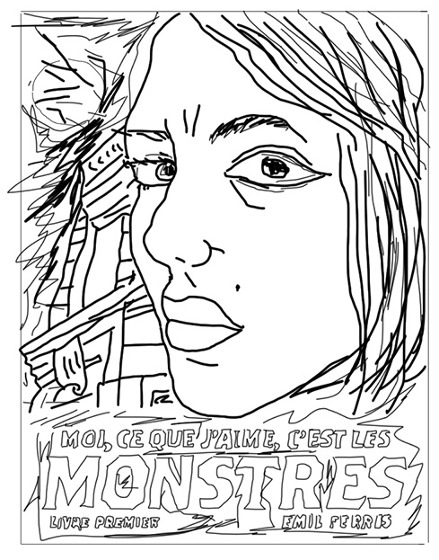
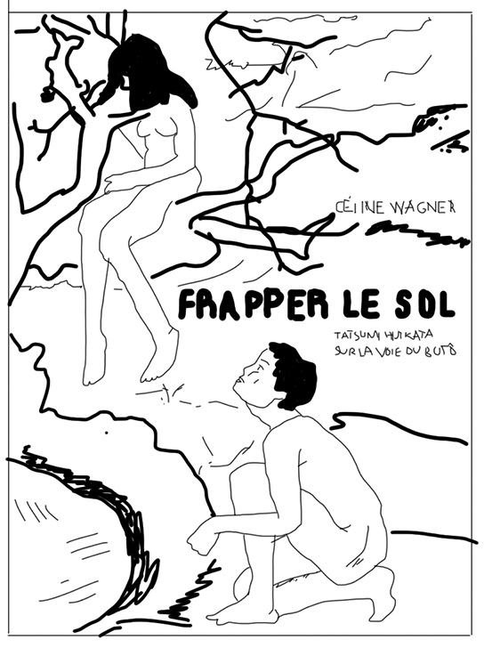

Élise Ponce – entretien et sélection
Paris, France
Éditrice
Créatrice et réalisatrice du podcast l’Auriculaire qui donne la parole à des autrices de bande dessinées.
LG : Je vais te poser la même question que celle que tu poses à tes interlocutrices : est-ce que tu peux me parler de ton parcours ?
EP : J’ai d’abord fait une fac de lettres puis des études d’histoire de l’art. Et comme j’ai grandi à Angoulême, la BD ça faisait partie de notre culture. Pour moi la bande dessinée c’est le combo parfait. Je suis éditrice et je pense que je ne pourrais jamais éditer que des romans ! Parce que j’ai besoin d’images.
Quand j’étais étudiante en histoire de l’art et que j’ai dû faire mon mémoire, c’était évident que ça allait être autour de la BD. Ça n’a pas été facile, on m’a rétorqué que ça n’était pas vraiment de l’art. Je me suis battue, et tout de suite j’ai voulu faire quelque chose sur les femmes et la bande dessinée. Mon mémoire était finalement intitulé « les femmes et la bande dessinée en France et dans les pays francophones ». L’idée c’était de traiter les femmes comme sujet de la bande dessinée : donc la façon dont elles sont représentées et dessinées, ainsi que les femmes en tant qu’autrices de BD. Ça c’était en 2002 ou 2003. Et à cette époque, il y en avait très peu. Il y avait eu Claire Brétécher, Chantal Montellier, Florence Cestac, qui était d’ailleurs une des promotrices de mon mémoire. Et je me suis prise de passion à l’époque pour Ah ! Nana. D’ailleurs c’était rigolo parce que dans le cadre du podcast, j’ai récemment été invitée à l’EESI d’Angoulême pour faire une intervention sur Ah ! Nana. C’était dans le cadre d’une journée d’étude sur le féminisme et la bande dessinée. J’étais dans tous mes états ! En plus, je passais après Geneviève Fraisse ! Quand on m’a dit ça, je me suis dit : « Quoi ? Elle va être là ! Elle va me voir ! Il faut que je fasse un truc merveilleux ! ». Je me suis replongée dans Ah ! Nana avec plaisir. Cette revue est extraordinaire. Bon après, ce qu’il y a, c’est que ça n’a pas été dirigé que par des femmes.
LG : Oui j’ai écouté le podcast avec Chantal Montellier, j’ai découvert le fonctionnement de l’équipe éditoriale par rapport aux dessinatrices. Et donc à la base tu voulais travailler dans le domaine de la bande dessinée ?
EP : J’ai fait une année de césure entre mon M1 et M2 pendant laquelle j’ai trouvé un boulot au Seuil, à la diffusion. Je suis finalement restée 7 ans ! Au bout de 3 ou 4 ans j’avais fait le tour et j’ai voulu passer à l’éditorial. Et ils avaient à l’époque une collection BD qui était assez pointue. Ils ont par exemple publié Perrine Rouillon qui fait La Petite Personne. Ils éditaient aussi Nicolas de Crécy. Mais ça a été finalement impossible de passer à l’éditorial depuis la diffusion, et encore moins de travailler sur la collection BD qu’ils étaient en train de laisser mourir.
J’ai décidé de quitter le Seuil pour faire une année de CIF [congé individuel de formation]. J’ai repris un M2 édition à Nanterre, puis un Master spécialisé édition, et à cette occasion, avec un groupe d’étudiantes, on a fait l’étude d’une importante collection chez un gros éditeur. On était allées les rencontrer, ils étaient sympas et ils nous ont filé des mugs… Mais ça m’a pas donné envie. Dans la bande dessinée, en tous cas à l’éditorial, déjà il n’y avait que des mecs… Enfin, en tous cas parmi les gens qu’on a rencontré. Des mecs de 40-50 ans… entre vicelards et paternalistes.
LG : Parfait.
EP : Je sais pas si tu vois le genre. Et donc ça donne moyen envie, quand tu te retrouves face à ces mecs, qui par exemple te font des blagues sexistes.
LG : Et ça tu t’y attendais ?
EP : Oui, déjà, j’en ai eu conscience quand j’ai rédigé mon mémoire. J’ai rencontré des gens que je ne citerai pas, qui sont encore des mecs très connus dans la bande dessinée, qui m’ont bien refroidie. Moi j’avais 22 ans, j’avais toujours des réflexions – bon pas des réflexions directes en-dessous de la ceinture. Mais tu vois cet espèce de regard… qui te met mal à l’aise. Et puis on te prend vraiment pour la cruche de service. Moi en plus je suis petite alors… Rien n’était jamais vraiment dit, mais tout ça donnait vraiment l’impression que la BD était un truc de mecs. C’est leur domaine. Alors que quand j’étais allée au Mercure de France, dirigé par Isabelle Gallimard, qui est quelqu’un de très humain, j’ai pas eu l’impression d’être jugée sur mon physique ou ce genre de choses. Aussi, il fallait trouver un boulot, et je n’avais pas suffisamment de relations dans la bande dessinée même si je connaissais des auteurs. Donc j’ai commencé dans l’édition scolaire, et ça me va super bien de faire ce que je fais aujourd’hui.
LG : Qu’est-ce qui t’a donné envie de créer ce podcast, dans lequel on écoute exclusivement des autrices de BD ?
EP : Quand mon premier contrat dans l’édition scolaire s’est terminé, j’avais besoin de faire une sorte de break, de faire quelque chose qui me tenait à cœur, et que ce soit politique. Je ne suis pas quelqu’un d’engagé politiquement, mais j’avais besoin d’engagement, pas d’être l’éditrice dans son bureau qui fait ce qu’on lui demande. J’avais envie de faire quelque chose par moi-même. J’écoutais pas mal de podcasts sur mon trajet, et quand j’ai entendu Pénélope Bagieu dans La Poudre, j’ai eu une illumination divine ! Je crois que j’étais partie chercher un paquet de clopes et que je l’écoutais en même temps, et je me suis dit : « il faut que je fasse un podcast uniquement sur la bande dessinée, et n’interviewer que des autrices de BD. » Et comme à chaque fois que je me suis dis « je voudrais faire ça, ça a l’air facile… »
LG : Ça ne l’est pas !
EP : Nan ! Bon une fois que tu as compris comment ça marche, ça va. Mais je n’avais jamais fait de son, je n’y connaissais rien. Je n’ai aucune oreille ! Au début je n’entendais pas la différence entre un bon son enregistré et un mauvais. J’ai commencé par contacter des autrices de BD en envoyant un mail au collectif des créatrices de bande dessinée contre le sexisme, et je me suis dis que je verrais si certaines étaient partantes. J’ai d’abord eu une réponse de Jeanne Puchol qui m’a dit que c’était une super idée et qu’elle faisait suivre au groupe. C’est Nephyla qui a répondu la première et donc on a calé un rendez-vous. J’ai acheté un premier enregistreur et fait les deux premières interviews. En parallèle j’ai rencontré plusieurs podcasteuses, dont une qui m’a donné le meilleur conseil qu’on m’ait jamais donné, elle m’a dit : « surtout trouve toi un ingé son parce que tu n’y arriveras jamais toute seule. » Et donc on a commencé comme ça.
J’ai accumulé des enregistrements. Je suis allée au festival d’Angoulême pendant quatre jours, je trouvais ça nul de n’interviewer que des autrices qui étaient à Paris, ça aurait été un peu restreint. Le festival c’était une façon d’en rencontrer plein. Et en revenant je m’étais fixée comme objectif de sortir un épisode par semaine. C’est génial, j’adore ça, mais depuis le mois de septembre j’ai repris le boulot donc je rame !
LG : Est-ce qu’il y a des autrices qui te disent non ? Par rapport au principe du podcast ?
EP : Jamais. D’ailleurs j’étais hyper touchée car Emma a accepté parce qu’elle avait écouté les autres interviews et m’a dit « il y a plein de fois où j’ai été interviewée par des journalistes qui me coupaient, ou me disaient ce que je devais dire, ou que l’interview était bricolée derrière. Et j’ai écouté les interviews que tu as publié, et tu laisses vraiment la parole. » Voilà, l’idée c’est de laisser les autrices s’exprimer, digresser etc. Bref, aucune n’a refusé. Surtout, elles sont super contentes d’avoir la parole, parce qu’on ne leur donne pas souvent comme ça : les laisser s’exprimer sur leur travail et sur comment elles le vivent et pas seulement sur une sortie. Ça m’a permis de faire des rencontres superbes.
LG : Est-ce que tu peux me faire une sélection de 6 BD francophones parues ces dernières années ?
EP : Je t’enverrai ma sélection par mail, j’ai besoin d’y réfléchir.
La sélection s’étant faite attendre, nous avons pris en compte les publications mentionnées pendant notre conversation, et enthousiasmant notre interlocutrice.
Moi, ce que j’aime, c’est les monstres, Emil Ferris, Monsieur Toussaint Louverture, 2017
Ce livre est très exigeant, c’est quasiment un roman, il n’y a pas de bulles. Le texte et le dessin marchent ensemble mais c’est à la frontière avec la bande dessinée. L’histoire est très exigeante et visuellement c’est très recherché, il y a par exemple des dessins qui sont des détournements de certains tableaux de Marie Cassatt.

La terre perdue, Hanneriina Moisseinen, Actes Sud, L’An 2, 2018
Elle a tout dessiné au crayon de papier et elle met en face de ses dessins des photos d’archives. Elle raconte l’exode des paysans finlandais en 44. Il y a des dessins absolument incroyables, tout au crayon de papier, moi ça m’a bouleversé.
Frapper le sol, Céline Wagner, Actes Sud, L’An 2, 2016
Dans le cadre du podcast j’ai interviewé Céline Wagner, j’ai adoré la rencontrer, c’est quelqu’un de passionnant. D’abord elle est plasticienne, avant de faire de la bande dessinée et ça se ressent. Je sais pas si tu as lu Frapper le sol ? C’est magnifique.

Fanzine La bûche,
Parution depuis 2015